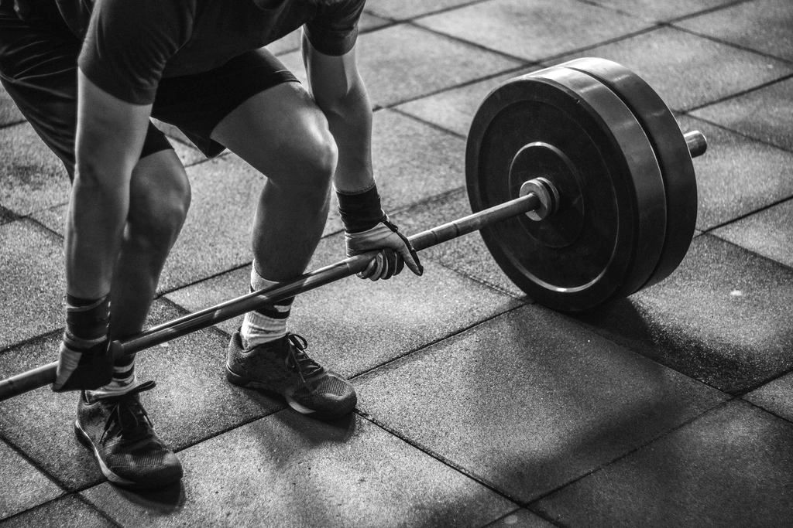

Squat (çömelme)
- Ayaklar omuz genişliğinde, parmak uçları hafif dışa.
- Kalça geriye ve aşağıya; dizler ayak uçlarıyla aynı yöne.
- Göğüs açık, topuklar yerde.
Sık hataDizlerin içe çökmesi. Hafifletin, dizleri dışarı itmeyi düşünün.
Kas ve güç, yağ yakımı, sağlık ya da sıfırdan başlangıç: hedefinizi seçin, örnek bir haftaya bakın. Antrenman günlerini kendi saatinize göre kaydırın; salon her gün her saat açık. Size uygun planı konuşmak için yazın.
Yeni başlıyorsanız, hamileyseniz ya da kalp, tansiyon, eklem gibi bir sağlık sorununuz varsa antrenmana başlamadan önce doktorunuza danışın.

Temsili görselDört hedef, dört örnek hafta. Kırmızı günler yüklenme günleri, çaprazlı günler dinlenme. Süreler ve tekrarlar yol göstericidir; vücudunuzu dinleyerek uyarlayın.
4gün / hafta
5gün / hafta
150dk / hafta, en az
Dünya Sağlık Örgütü, yetişkinler için haftada 150–300 dakika orta yoğunlukta (ya da 75–150 dakika yüksek yoğunlukta) aerobik aktivite ve haftada en az iki gün kas güçlendirme öneriyor. Bu hafta o öneriyi salona taşır.
3gün / hafta
Çoğu kuvvet programı bu altı hareketin ya da onların makine ve dambıl türevlerinin üzerine kurulur. Her biri için üç ipucu ve en sık yapılan hata. Başlangıç set ve tekrarları örnektir.
Sık hataDizlerin içe çökmesi. Hafifletin, dizleri dışarı itmeyi düşünün.
Sık hataBelin yuvarlanması. Ağırlığı azaltın, hareketi kalçadan başlatın.
Sık hataBarı göğüste sektirmek. Kontrollü indirin, kısa bir duraksama yapın.
Sık hataGövdeyi sallayarak çekmek. Ağırlığı azaltın, yavaş indirin.
Sık hataBelden geriye kaykılmak. Daha hafif yükle, karnı sıkarak itin.
Sık hataKalçanın düşmesi ya da havaya kalkması. Süreyi kısaltın, formu koruyun.
Ağırlığı seçerken en işe yarar soru: “Bu setten sonra kaç tekrar daha yapabilirdim?” 1'den 10'a zorlanma ölçeği (RPE) bunu sayıya döker. Çoğu çalışma seti 7–8 aralığında olmalı.
Isınma ve teknik çalışma. Konuşarak yapılır.
Çalıştığınızı hissedersiniz ama 4 ve üzeri tekrar daha yapabilirsiniz.
2–3 tekrar daha yapabilirdiniz. Çoğu çalışma seti burada.
Bir tekrar daha ya çıkar ya çıkmaz. Seyrek kullanılır; yeni başlayanlar için gereksiz.
Gece yarısı da sabah altıda da aynı düzen. Saat göstergesi, ısınmaya başladığınız andan itibaren geçen süre.
Üç dakika bisiklet, kürek ya da tempolu yürüyüş. Nabız hafifçe yükselsin, vücut ısınsın.
Üç dakika: kalça açma, omuz çevirme, kedi-deve, hafif çömelmeler. Yerinde tutarak değil, hareket ederek esneme.
İki dakika: kısa plank, kalça köprüsü, bantla çekiş. Gövdeyi ve kalçayı uyandırın.
Günün ilk hareketinin hafif setleri: boş bar ya da çok hafif ağırlıkla başlayıp kademeli artırın.
Artık hazırsınız. İlk çalışma setini zorlanma ölçeğinde 7 civarında tutun.
Bir setteki ağırlık ve tekrar sayınızdan tek tekrar maksimumunuzu (1TM) tahmin edin, çalışma ağırlıklarını görün, barı plakalarla kurun. Epley formülüne dayanan yaklaşık bir hesaptır; gerçek maksimum denemesini tek başınıza yapmayın.
Tekrarı 1–12 arasında girin; tekrar arttıkça tahmin zayıflar.
Tahmini 1TM (yaklaşık)
—
| Oran | Ağırlık | Kullanım |
|---|
Toplam hedef ağırlığı girin.
Plakalar standart değerlere göre hesaplanır: 25, 20, 15, 10, 5, 2,5 ve 1,25 kg. Salondaki bar ve plakalar farklı olabilir; yükledikten sonra iki tarafı da kontrol edin.
Mifflin-St Jeor formülü dinlenme hâlindeki harcamanızı, aktivite katsayısı da günlük ihtiyacınızı yaklaşık olarak tahmin eder. Genel bir formüldür; vücut yapınız, sağlık durumunuz ve kullandığınız ilaçlar gerçek değeri değiştirebilir.
Kilo vermek ya da almak istiyorsanız hedef kalori ve beslenme planı için bir diyetisyenden ya da doktorunuzdan destek alın.
Tahmini günlük ihtiyaç
—
Bu sonuçlar yaklaşıktır ve tıbbi öneri değildir. Böbrek rahatsızlığı, diyabet gibi durumlarda ya da hamilelikte beslenme önerileri farklıdır; doktorunuza danışın.
Diyet listesi değil; hangi saatte antrenman yaparsanız yapın işe yarayan genel alışkanlıklar.
Buradaki planlar herkese açık örneklerdir. Size özel program ve takip seçenekleri için WhatsApp'tan yazın; hedefinizi ve uygun saatlerinizi konuşalım.